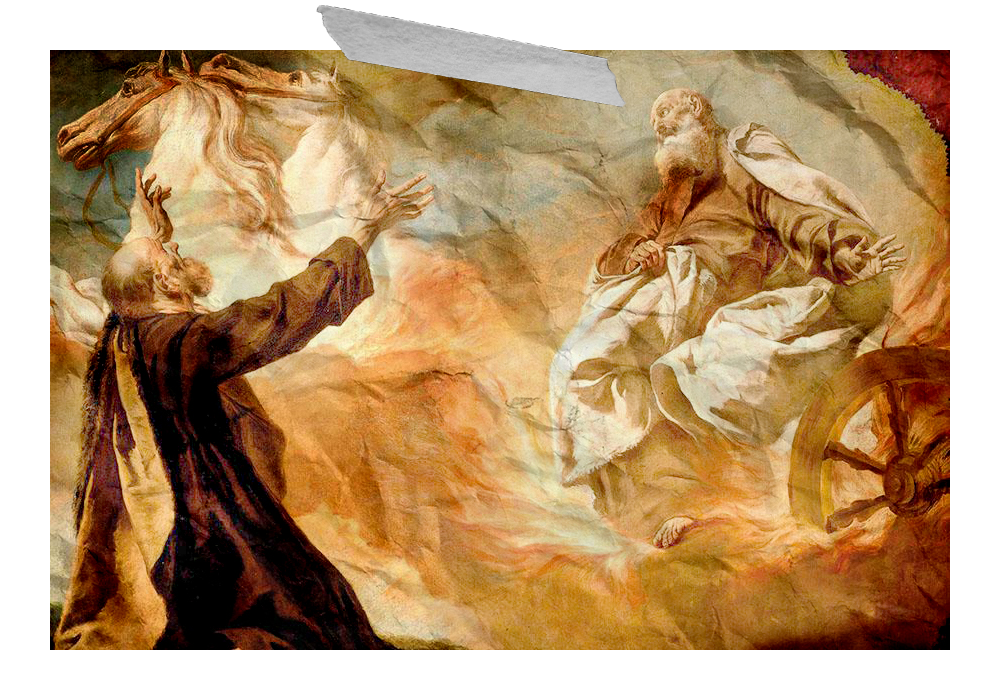

Gustos Culturales
Bueno en si me gustan hechos/historias mitologicas, que sean curiosas e interesantes, como la mitologia griega, nordica y hechos biblicos (independiente si son reales o no). Me gustan distintos estilos artisticos, como impresionismo,surrealista e incluso simples bosquejos cargados de lineas
Me interesa algo esas historias del susodicho 'horror cosmico', autores como los de Ambrose Bierce o Arthur Machen. Incluso juegos como Bloodborne y Darkest Dungeon tocan historias de estilos similar, que son muy atrapantes
Mis gustos musicales
Géneros preferidos: Drumm & Bass, Techno,
Rock Alternativo, Psycho Trance, Electro House, Synthwave
y alguna antigua de por ahí.
Músicas Favoritas:
Propane Nightmares (Pendulum)
Send Me an Angel (Infected Mushroom)
Genesis (Justice)
Nada (Zoe)
Run You (The Quemists)
Out of Touch (Hall & Oates)